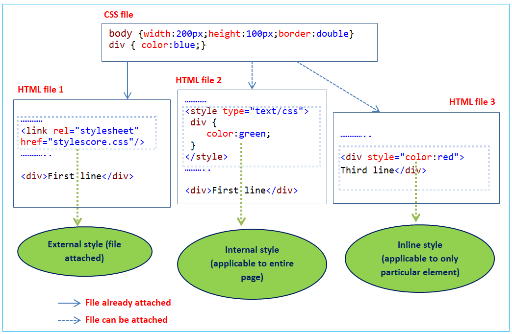
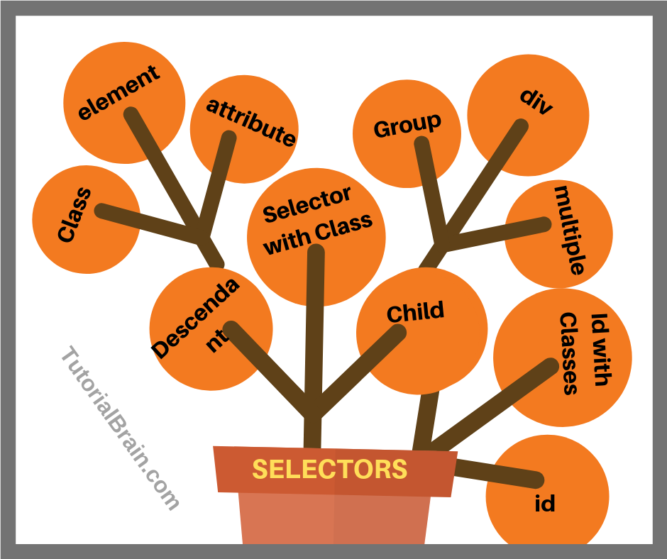

- What are the benefits of using CSS?
- It is easy to maintain and update it also enable us to us less code so the website downloads the items and works faster there are more formating options in css it also provides us search engine optmization benefits.
- What are the disadvantages of CSS?
- It gives us limited security,extar work for developers,confusion due to many versions of css.
- What is the difference between CSS2 and CSS3?
-
CSS2 CSS3 It has normal styling It has better styling It has no transitions and animations It has new transitions and animations It has no shadows It has shadows It has no embedded fonts It has embedded fonts and responsive layouts - Name a few CSS style components
-
The components of css style are:
1)Selecter:HTML element name, id name, class name.
2)Property:It's like an attribute such as background color,font-size,position,text-align,color,border etc.
3)Values:which defines property or values allocate for properties.
- What do you understand by CSS opacity?
- It specifies the opacity/transparency of an element.It is mostly used with the :hover selector to change the opacity on mouse-over.
- How can the background color of an element be changed?
- In css to change the background color of the element we can use property of "background-color:;"
e.g-(background-color: whitesmoke;) - How can image repetition of the backup be controlled?
- In css we can control the image repetition of the backup with thw help of "background-repeat", if we don't want the image to repeat then we can use "no-repeat" value.
- What is the use of the background-position property?
- Background-position is mostly used to set the position of our images.
- Which property controls the image scroll in the background?
- The property of background-attachment is used to controls the image scroll in the background.
- Why should background and color be used as separate properties?
- The background property is a complex property in CSS, and if it is combined with color, the complexity will further increase.
- How to center block elements using CSS1?
- To center the block elements “margin-left” and “margin-right” property and give value “auto” to both,we can use width property and give value as per required.
- How to maintain the CSS specifications?
- The CSS specifications are maintained by the World Wide Web Consortium (W3C).
- What are the ways to integrate CSS as a web page? What is embedded style sheets?
-
There are 3 ways to integrate CSS as a web page :-
(1)Inline - using style attribute inside element
(2)Internal - using style element in head section
(3)External - using link to use an external css

- What is embedded style sheets?
- Embedded style sheets allow you to define styles for the whole HTML document in one place. Embedded style sheets refer to when you embed style sheet information into an HTML document using the < style > element.
- What are the external style sheets?
- External style sheets are used to separate CSS file which can be accessed by using link element in head section.
- What are the advantages and disadvantages of using external style sheets?
-
Advantages Disadvantages Using them, the styles of multiple documents can be controlled from one file. In order to import style information for each document, an extra download is needed. Classes can be created for use on multiple HTML element types in many documents. Until the external style sheet is loaded, it may not be possible to render the document. In complex situations, selector and grouping methods can be used to apply styles. For small number of style definitions, it is not viable. - What is the meaning of the CSS selector?
-
It is a pattern of elements and other terms that tell the browser which HTML elements should be selected to have the CSS property values inside the rule applied to them.
There are 9 types of selectors in CSS:-
(1)Universal selector (2)element selector (3)id selector
(4)class selector (5) grouping selector (6)descendent selector
(7)child selector (8)general sibling selector (9)adjacent sibling selector

- What are the media types allowed by CSS?
-
(1)all:- Suitable for all devices.
(2)braille:- Intended for braille tactile feedback devices.
(3)embossed:- Intended for paged braille printers.
(4)handheld:- Intended for handheld devices (typically small screen, limited bandwidth).
(5)print:- Intended for paged material and for documents viewed on screen in print preview mode.
(6)projection:- Intended for projected presentations, for example projectors.
(7)screen:- Intended primarily for color computer screens.
(8)speech:- Intended for speech synthesizers. Note: CSS2 had a similar media type called 'aural' for this purpose.
(9)tty:- Intended for media using a fixed-pitch character grid (such as teletypes, terminals, or portable devices with limited display capabilities).
(10)tv:- Intended for television-type devices (low resolution, color, limited-scrollability screens, sound available).
- What is the rule set?
- A selector group and an associated declarations block, together, are called a ruleset, or often a rule.
- Create Layouts


Thumbnail
This is a wider card with supporting text below as a natural lead in to additional content.The content is little bit longer.
Thumbnail
This is a wider card with supporting text below as a natural lead in to additional content.The content is little bit longer.
Thumbnail
This is a wider card with supporting text below as a natural lead in to additional content.The content is little bit longer.
Thumbnail
This is a wider card with supporting text below as a natural lead in to additional content.The content is little bit longer.
Thumbnail
This is a wider card with supporting text below as a natural lead in to additional content.The content is little bit longer.
Thumbnail
This is a wider card with supporting text below as a natural lead in to additional content.The content is little bit longer.